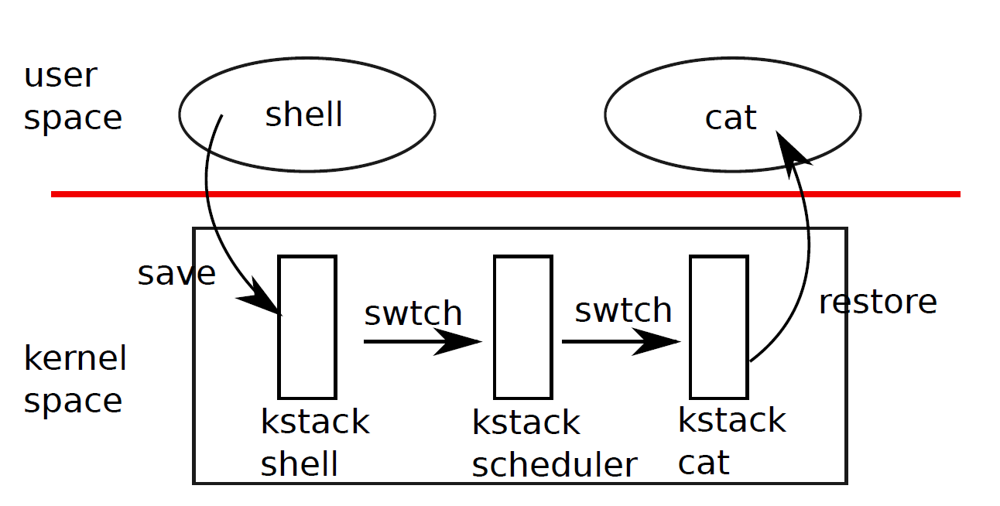
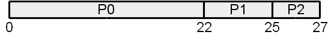
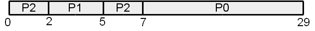
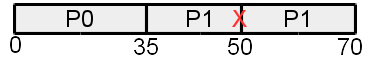
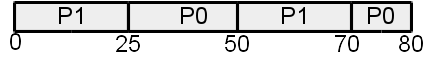
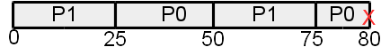
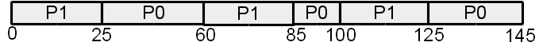

Scheduling
CS422/522 Lecture 8
29 September 2014
Last updated: 29 September 2014
Recap
- Race conditions
- Synchronization
- Atomic operations
- Priority Inversion
Debugging
- Before you have a bug...:
- Read documentation
- Understand hardware interface
- Understand software interface
- Find the exact line / instruction causing bug
- Understand error message
- Think about all data related to that point
- Make sure you setup the data correctly
- Usage error message to narrow in on issue
- Check your code
Example
- int 0x30 -- triple fault
- Triple fault: unable to access memory
- Possible sources:
- IDT not set or lidt not called
- Invalid IDT
- 0x30 IDT entry improperly set
- GPF not correctly set
Scheduling
- N processes >> M processors
- Each process:
- Has illusion of ownership of the machine
- Has own virtual processor
- Allocated timeslice of CPU
- System support:
Cooperative Multiprocessing
- What causes process switches?
- Explicit yields
- Wait on I/O
- Termination
- Generally -- transitions to kernel
- Disadvantage: bad application may never release CPU.
- Advantage: (critical / sensitive) operations are not interrupted.
Preemptive Multiprocessing
- What causes process switches?
- Timer interrupt
- Resource available
- Advantage: system enforced fair share of CPU
- Disadvantage: preemption may occur during sensitive operations
Scheduling Process

- Current process yields
- Enters kernel
- Save current process state
- Kernel selects new process
- Kernel loads new process state (context switch)
Scheduling Criteria
- CPU utilization
- Throughput
- Turnaround time
- Waiting time
- Response time
Scheduling Algorithm Families
- Cooperative
- Preemptive
- Real-time
Multiprocessor Concerns
- Synchronized access to list of processes
- Processor affinity
- Load balancing concerns:
- Optimize CPU usage
- Cost of migrating a process
- Access to memory (NUMA)
First-Come, First-Serve
- Processes become runnable, enter queue
- First in queue runs
- Employs cooperative multiprocessing:
- Release CPU on I/O or termination
- Returns to tail of queue on I/O completion
- Example:

- Issue: Long waiting time
Shortest-Job-First
- Processes become runnable, enter queue
- Queue sorted by job run-time
- Employs cooperative multiprocessing
- Example:

- Issues:
- High consumption processes may never run, starvation
- Requires knowledge of application run time
Priority Scheduling
- Each process has a priority
- High priority runs
- New high priority proceess joins the queue:
- Cooperative: wait for current process to end
- Preemptive: interrupt current process and replace
- Priority ~ Shortest-Job-First
- Priority can address starvation:
increase priority of old processes (aging)
Round-Robin
- First-come, first-serve with preemption
- Processes run until done using CPU or preempted
- Preempted aftera quantum / time slice
- Challenge: balance between execution time / context switch time
Real-Time Scheduling
- Critical operations must occur at a certain time:
- Soft: executed as soon as possible
- Hard: if not executed don't execute
- Processes typically run periodically and for a fixed period of time
- Delays:
- Interrupt -- time to begin processing the interrupt
- Dispatch -- context switch
Priority Scheduling
- Processes run at assigned priority
- Example:
| PID | CPU Time | Period | Priority |
| 0 | 100 ms | 35 ms | 0 |
| 1 | 50 ms | 20 ms | 1 |
- 
Rate-Monotonic
- Priority set to inverse of period
- Optimal for static scheduling
| PID | CPU Time | Period | Priority |
| 0 | 100 ms | 35 ms | 1/100 |
| 1 | 50 ms | 20 ms | 1/50 |

Another RM Example
| PID | CPU Time | Period | Priority |
| 0 | 50 ms | 25 ms | 1/50 |
| 1 | 80 ms | 35 ms | 1/80 |

Earliest-Deadline-First
Prioritize earliest deadline first
| PID | CPU Time | Period | Priority |
| 0 | 50 ms | 25 ms | dynamic |
| 1 | 80 ms | 35 ms | dynamic |

Xv6 Scheduler
2460 struct proc *p;
2462 for(;;){
2464 sti();
2467 acquire(&ptable.lock);
2468 for(p = ptable.proc; p < &ptable.proc[NPROC]; p++){
2469 if(p−>state != RUNNABLE)
2470 continue;
2471
2475 proc = p;
2476 switchuvm(p);
2477 p−>state = RUNNING;
2478 swtch(&cpu−>scheduler, proc−>context);
2479 switchkvm();
2483 proc = 0;
2484 }
2485 release(&ptable.lock);
2487 }
Interrupt-Based Context Switch
3113 switch(tf−>trapno){
3114 case T_IRQ0 + IRQ_TIMER:
3115 if(cpu−>id == 0){
3116 acquire(&tickslock);
3117 ticks++;
3118 wakeup(&ticks);
3119 release(&tickslock);
3120 }
3121 lapiceoi();
...
3173 if(proc && proc−>state == RUNNING &&
tf−>trapno == T_IRQ0+IRQ_TIMER)
3174 yield();
Next Time
Wednesday 1:00PM
Interprocess Communication